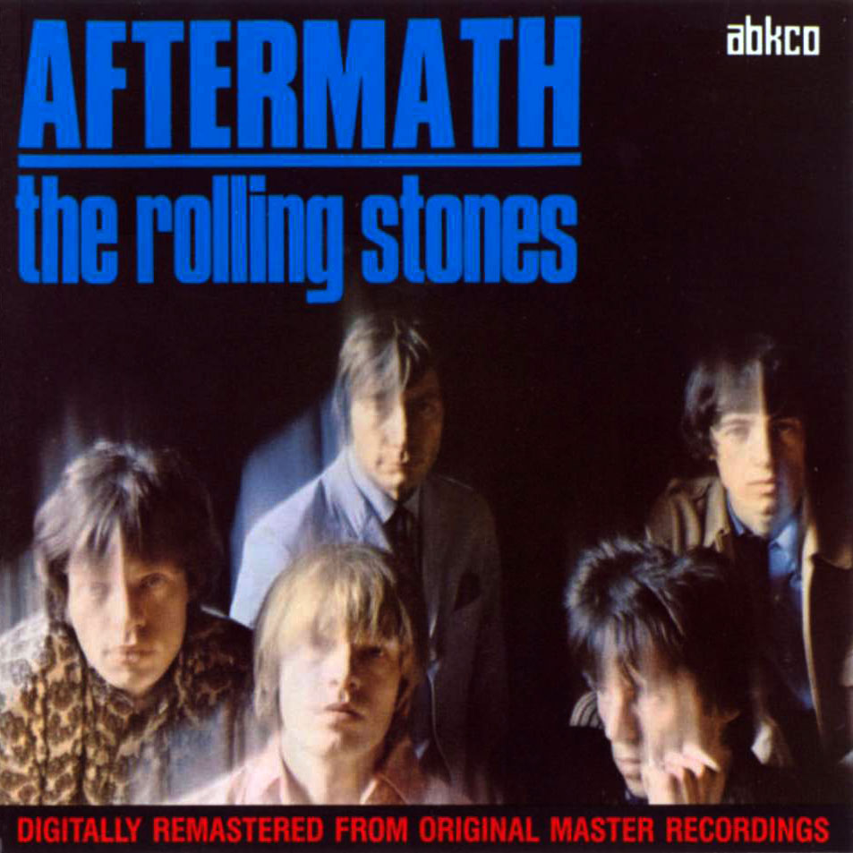
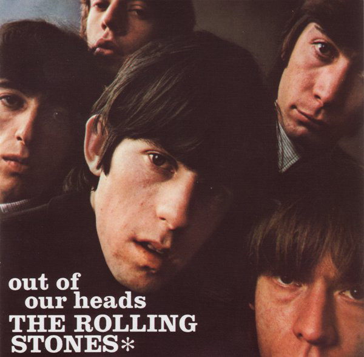
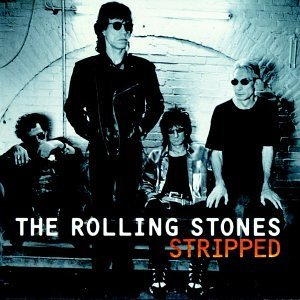

Banda británica de rock originaria de Londres. La banda se formó en Abril de 1962.

| Portada | Año | Canción | Disco |
|  | 1966 | Paint it Black | Aftermath |
|  | 1969 | Satisfaction | Out of Our Heads |
|
1971 | Wild Horses | Sticky Fingers |
|  | 1995 | Angie | Stripped |
| Uno de sus mayores éxitos fue "Jumpin Jack Flash" | |||
|---|---|---|---|